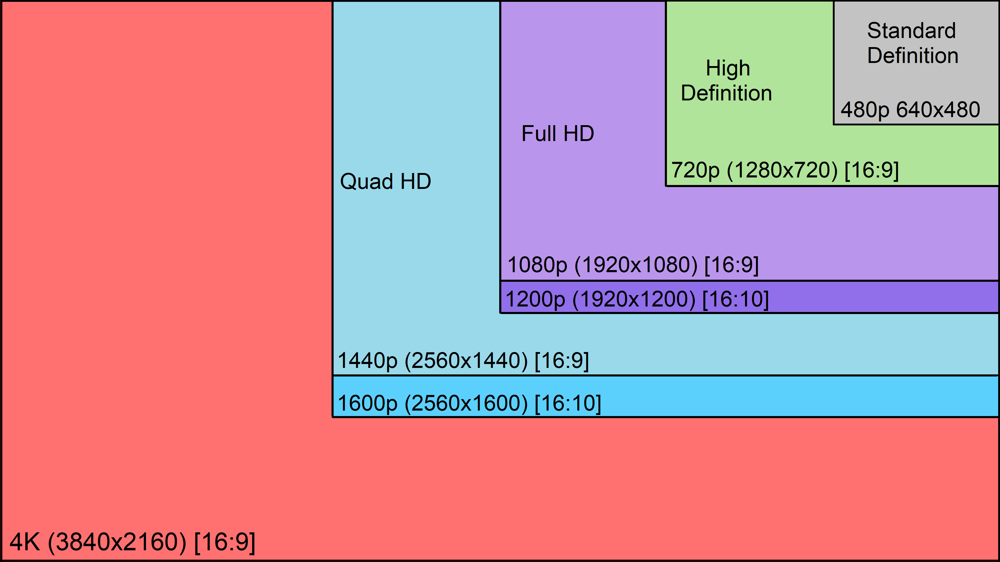
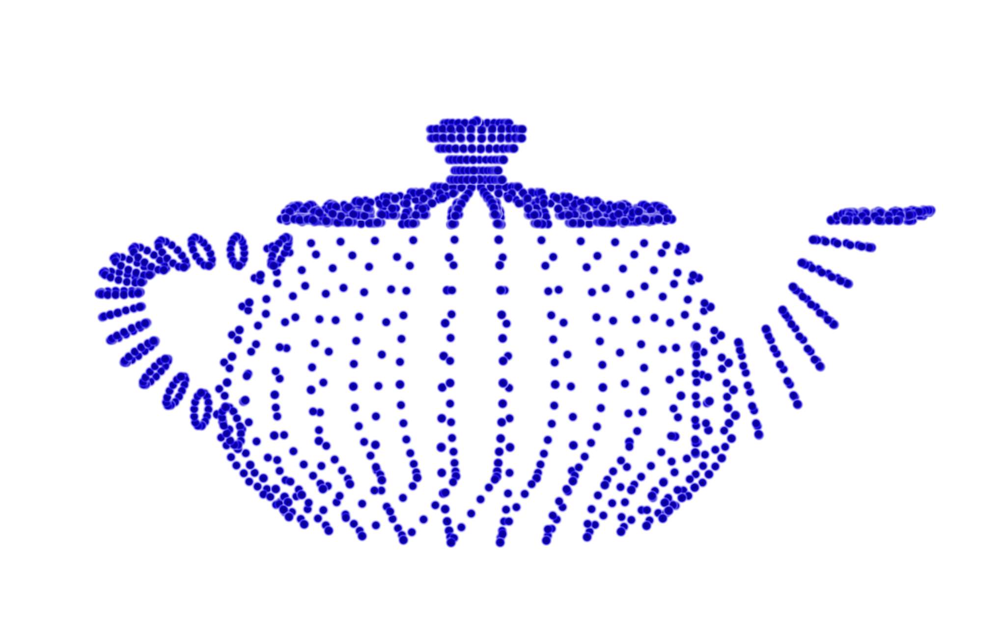
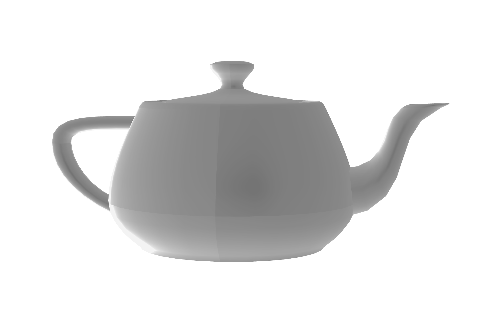
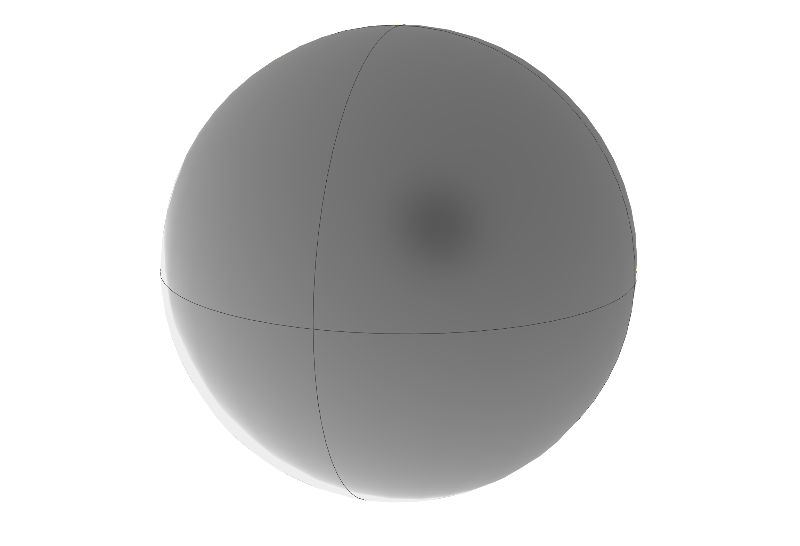
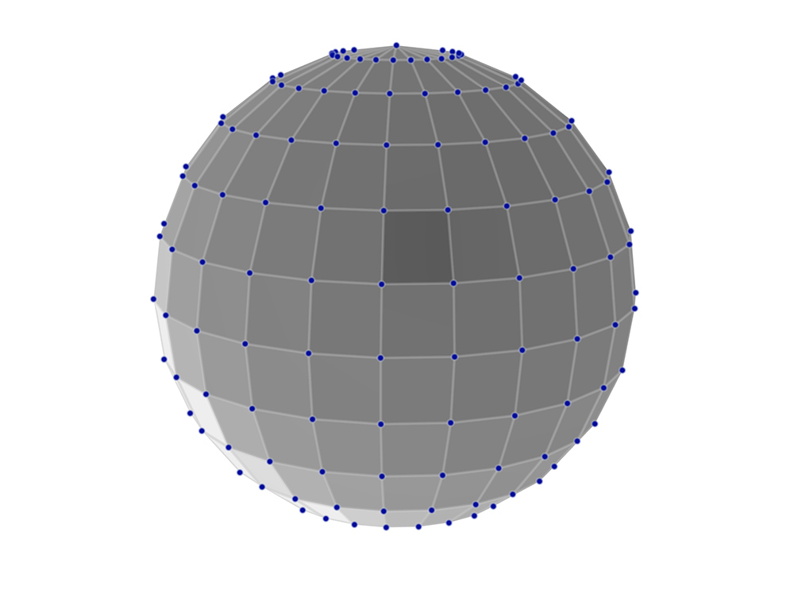
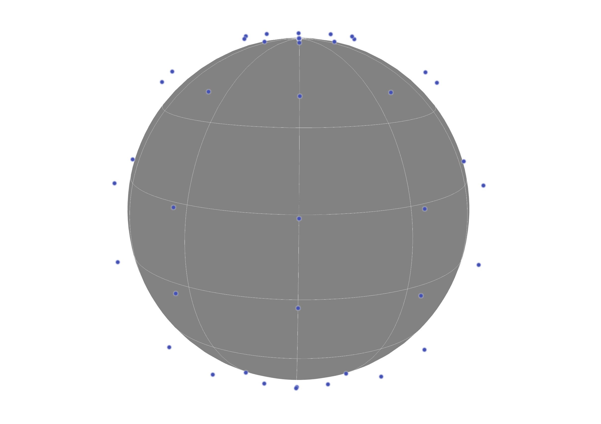
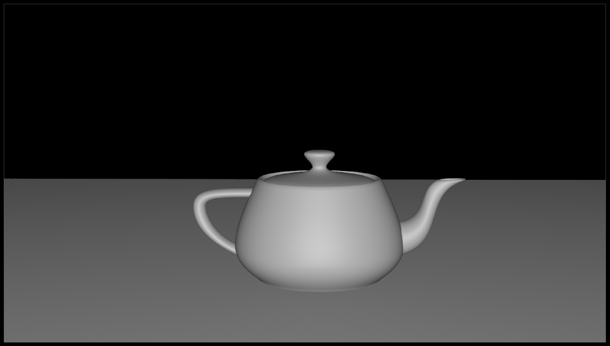
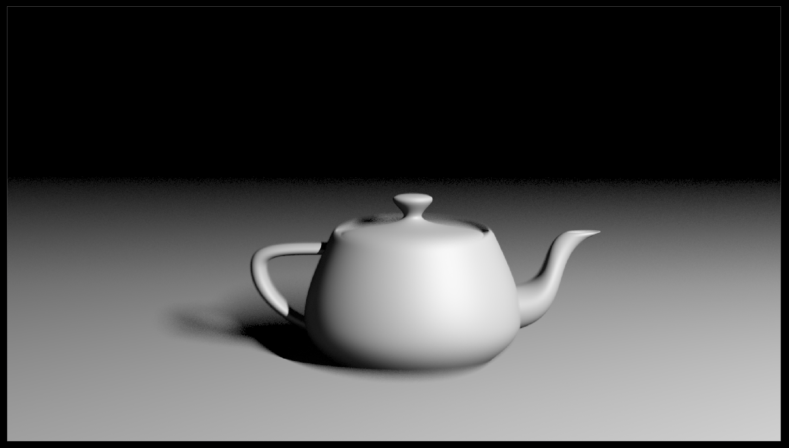
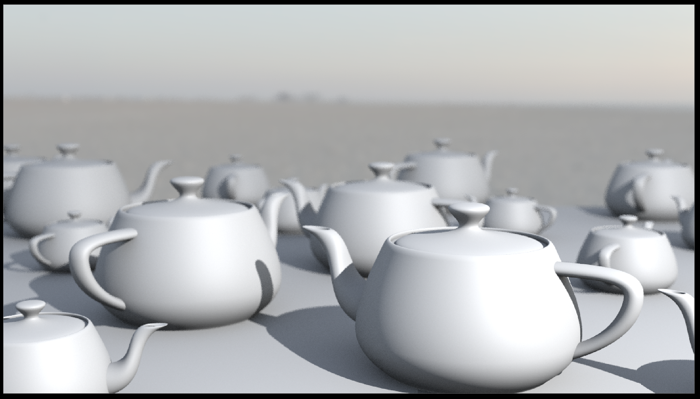
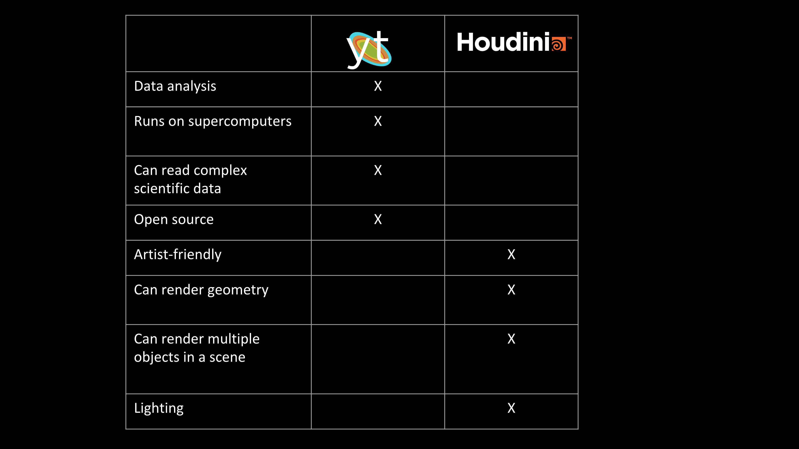

<!doctype html>
<html>
  <head>
<meta charset="utf-8">
<meta name="viewport" content="width=device-width, initial-scale=1.0, maximum-scale=1.0, user-scalable=no">

<title>Lecture 14</title>

<link rel="stylesheet" href="https://cdnjs.cloudflare.com/ajax/libs/reveal.js/3.8.0/css/reveal.css">
<link rel="stylesheet" href="https://cdnjs.cloudflare.com/ajax/libs/reveal.js/3.8.0/css/theme/white.min.css">
<link rel="stylesheet" href="https://maxcdn.bootstrapcdn.com/font-awesome/4.5.0/css/font-awesome.min.css">

<!-- Theme used for syntax highlighting of code -->
<link rel="stylesheet" href="https://cdnjs.cloudflare.com/ajax/libs/highlight.js/9.12.0/styles/github.min.css">
<link href="https://fonts.googleapis.com/css?family=Questrial" rel="stylesheet">

<script src="https://cdnjs.cloudflare.com/ajax/libs/reveal.js/3.8.0/lib/js/head.min.js"></script>
<script src="https://cdnjs.cloudflare.com/ajax/libs/reveal.js/3.8.0/js/reveal.min.js"></script>


<script src="https://cdn.jsdelivr.net/npm/vega"></script>
<script src="https://cdn.jsdelivr.net/npm/vega-lite"></script>
<script src="https://cdn.jsdelivr.net/npm/vega-embed"></script>


</style>

  <link rel="stylesheet/less" type="text/css" href="/spring2020/assets/styles.less" />
  </head>

  <body>
    <div class="reveal">
      <div class="slides">
        <section data-markdown
           data-separator="^\n---\n"
           data-separator-vertical="^\n----\n">
          <script type="text/template">
<!-- .slide: class="titleslide" -->

# Data Visualization

<div style="height: 6.0em;"></div>

## Jill P. Naiman
## Spring 2020
## Lecture 14


---

## Warm-Up Activity

 1. What is the visualization trying to show?
 1. What are its methods?
 1. What are the strengths / weaknesses?

http://scienceofhiv.org/

---

## Last Week


notes:
last week we talked about sci viz with yt

---

## This Week


notes:
this week we'll touch VERY briefly on volume rendering in Python

There are MUCH more in the notes than we are going to get through, so if this stuff interests you feel free to check it out further!

---

## Today

 1. 3D Computer Graphics
   * 3D Graphics Tools
   * Visual Effects tools
 1. Validation 
 1. Publishing
 
notes: so today we're going to talk a bit about some "high-end" graphics tools  and about how rendering works

AVL talked a bit about this with us 2 weeks ago, and here we will just mention a few things before moving back to Idyll

---

<br>
<br>
<br>

# TOPIC 1: 3D Computer graphics

---

## A fun ~2 min movie from Pixar

[Check out this link here](https://www.youtube.com/watch?v=NEzJH-JrAdw)
 
notes: this a fun link to see how folks from pixar describe what they do

---

## 3D Computer Graphics

 * Composed of virtual 3D objects
 * Often time evolving (animated)
 * Displayed on 2D screens
 * Attempts to simulate photorealism to some extent
 
notes: note these can also be displayed on 3D screens, but the way that happens is a little different

---

## Computer Graphics Terms

 * Real-time vs Pre-Rendered graphics
 * Frames vs Timesteps


notes:
real-time graphics refresh the screen faster than the eye perceives, usually at least 30 times a second. Pre-rendered can take all the time in the world.

Frames are individual images that when strung together in time create the illusion of motion. They are the "timesteps" of a movie. But scientific data also have "timesteps" which may not be synchronized with the speed of the movie.

You'll notice in this GIF, the frame rate and the time step rate are different - we are zooming out quicker than we are updating the data in the images

---

## Computer Graphics Acronyms

 * VFX - visual effects
 * CGI - computer graphics imagery
 * FPS - frames per second
 * GUI - graphic user interface
 * HUD - heads up display
 
notes: you aren't required to remember any of these, but if you see them pop up, here they are

---

## Common Frame Rates

 * 24 FPS - theatrical films
 * 30 FPS - TV and specialty theaters
 * 48 FPS, 60 FPS - video games, interactive graphics, virtual reality
 * 120 FPS - really good virtual reality

<iframe width="560" height="315" src="https://www.youtube.com/embed/pfiHFqnPLZ4" frameborder="0" allow="accelerometer; autoplay; encrypted-media; gyroscope; picture-in-picture" allowfullscreen></iframe>

notes:

you can note if you try to follow the 15 or 30 FPS (frames per second) with your eye you see that it is jumpy

24 fps is considered the absolute minimum necessary frequency so that people don't perceive individual frames.

48 fps is widely considered so fast the human eye can't perceive any separation at all - but 60 fps is safer.

if you watch a TV and it seems distractingly smooth, it's probably doing frame interpolation to make 30fps content play back at 60fps.

This youtube video actually only plays at 60FPS, so the 120 ball is kind of pointless.

---

## Common Resolutions

 * 1024 x 768 - standard definition or SD (3:4)
 * 1920 x 1080 - high definition or HD (16:9)
 * 3840 x 2160 - ultra high definition or UHD or 4k (16:9)



notes:
Often people refer to these formats as 1k or 2k or 4k in graphics, referring to the number of pixels along the horizontal axis.

While these are the most common formats today, there's a long history of a crazy variety of formats. Cinemascope had a ratio of 2.35:1 which was wider than modern wide screens. Also fun fact, it didn't have a resolution because it was film before? digital. 

---

## Common File Formats

 * Images: JPG, PNG, TIF, EXR
 * Video: MOV, MP4, AVI
 * Codec: H.264, ProRes, DNxHD

notes:
There are many more formats, but because these are either lossless or extremely space efficient, they are the most popular.

EXR in particular is special because it can store many image layers including DEEP images which store depth information.

ProRes is only available on Apple, and DNxHD is Windows

---

## 3D Geometry

All 3D geometry is represented as:

<div class="left">

 * Points
 
</div>

<div class="right">
	
</div>


notes: how do we represent geometry in space? one way is points...

---

## 3D Geometry

All 3D geometry is represented as:

<div class="left">

 * Points
 * Edges
 
</div>

<div class="right">
	
</div>

---

## 3D Geometry

All 3D geometry is represented as:

<div class="left">

 * Points
 * Edges
 * Surfaces
 
</div>

<div class="right">
	
</div>


notes: we can connect these points and images to make surfaces

---

## 3D Geometry

All 3D geometry is represented as:

<div class="left">

 * Points
 * Edges
 * Surfaces
 * Volumes
 
</div>

<div class="right">
	
</div>


notes: or we can give the 3D surfaces some depth and make them into shapes

here these 3D cubes are called "voxels" which are similar to 2D "pixels" but for volumes

---

## 3D Geometry

<iframe src="https://player.vimeo.com/video/169599296?color=949494&title=0&byline=0&portrait=0" width="640" height="360" frameborder="0" allow="autoplay; fullscreen" allowfullscreen></iframe>

Link: https://player.vimeo.com/video/169599296?color=949494&title=0&byline=0&portrait=0

notes:

You can convert between points, surfaces and volumes, ofthen to really cool effects like shown - you can get some bananas permutations.

---

## 3D Geometry

Surfaces can be encoded as:

<div class="left">

 * Implicit primitives
 
</div>

<div class="right">
	
</div>


notes:
primitives are defined by mathematical functions. This sphere is defined by a center position and a radius.

---

## 3D Geometry

Surfaces can be encoded as:

<div class="left">

 * Implicit primitives
 * Polygonal Meshes
 
</div>

<div class="right">
	
</div>


notes:
Quadrilaterals are a good way to see the flow of geometry, which artists like, but quads can bend.

---

## 3D Geometry

Surfaces can be encoded as:

<div class="left">

 * Implicit primitives
 * Polygonal Meshes
 
</div>

<div class="right">
	
</div>


notes:
Triangles cannot bend because three points define a plane. So automatic geometry like the stuff you use in science is more often going to be triangles.

---

## 3D Geometry

Surfaces can be encoded as:

<div class="left">

 * Implicit primitives
 * Polygonal Meshes
 * NURBS or Bezier Surfaces
 
</div>

<div class="right">
	
</div>

notes:
This is a NURBS sphere. You can see the control vertices are floating off the surface. Every patch on the surface is influenced by many of the neighboring points.

Here if I wanted to deform this surface, I could pull at one of the blue points and the shape of the surface would change.

---

## 3D Geometry

Surfaces can be encoded as:

<div class="left">

 * Implicit primitives
 * Polygonal Meshes
 * NURBS or Bezier Surfaces
 * Subdivision Surfaces
 
</div>

<div class="right">
	
</div>


notes:
Subdivision surfaces are like those adaptive volumes we saw last week. You can add detail where you want it.

---

## 3D Geometry

Datasets with many fields called "attributes":

<div class="left">

 1. Transform Attributes (translate, rotate, scale)
 
</div>

<div class="right">
	
</div>


notes:
These transform attributes are the same for all objects.

Recall we discussed some of these in earlier classes for 2D plots.  Same principle here.

---

## 3D Geometry

Datasets with many fields called "attributes":

<div class="left">

 1. Transform Attributes (translate, rotate, scale)
 1. Shape Attributes (radius, bumpyness, twistyness)
 
</div>

<div class="right">
	
</div>


notes:
shape attributes depend totally on what the shape is.

These are something you won't really see in 2D unless you start modifying 2D shapes with some weird transforms.

---

## Rendering

Rendering is the process of flattening a 3-dimensional scene into a flat image.

How do photographic cameras accomplish this?

---

## Photographic Rendering

 1. White light leaves a light source like the sun

---

## Photographic Rendering

 1. White light leaves a light source like the sun
 1. The light bounces off an object like a ball or a leaf, and inherits the object's color

---

## Photographic Rendering

 1. White light leaves a light source like the sun
 1. The light bounces off an object like a ball or a leaf, and inherits the object's color
 1. Colored light arrives at the camera lens

---

## Photographic Rendering

 1. White light leaves a light source like the sun
 1. The light bounces off an object like a ball or a leaf, and inherits the object's color
 1. Colored light arrives at the camera lens
 1. The camera lens directs the light to a specific location on the CCD sensor, effectively a pixel

---

## Photographic Rendering

 1. White light leaves a light source like the sun
 1. The light bounces off an object like a ball or a leaf, and inherits the object's color
 1. Colored light arrives at the camera lens
 1. The camera lens directs the light to a specific location on the CCD sensor, effectively a pixel
 1. The camera processor stores the color of the light at the location of the pixel

---

## Photographic Rendering

 1. White light leaves a light source like the sun
 1. The light bounces off an object like a ball or a leaf, and inherits the object's color
 1. Colored light arrives at the camera lens
 1. The camera lens directs the light to a specific location on the CCD sensor, effectively a pixel
 1. The camera processor stores the color of the light at the location of the pixel

If we want to simulate this process in computer graphics software, how many light rays do we need to calculate? 

---

## Photographic Rendering

Trick question, that's WAAAAYYYYY too expensive!

Why?

The light rays that never arrive at the camera are a totally wasted calculation. They don't contribute to the final image at all.

Is there a better way?

---

## Raytracing

Raytracing does this process backwards:

 1. A light ray starts at a camera position and travels toward/through a specific image pixel
 1. The light ray bounces off objects in the scene
 1. If the bounced light arrives at a light, it is recorded as "lit"
 1. If the light ray never arrives at an object or a light, it is recorded as the background color, usually black

This way, we only calculate the path of one light ray for each pixel. It's efficient!

---

## Raytracing

Houdini VEX path tracer

<iframe src="https://player.vimeo.com/video/331150010" width="640" height="412" frameborder="0" allow="autoplay; fullscreen" allowfullscreen></iframe>

Link: https://player.vimeo.com/video/331150010

---

## Raytracing

Q: How does the renderer handle procedural (formula-driven) geometry?

A: Micropolygon dicing

Q: How does the renderer handle volumetric data that doesn't just "bounce"?

A: Volume ray marching

notes:
The renderer will divide interpolated or dense geometry into smaller and smaller polygons until they are smaller than the image pixel being calculated. These smaller-than-a-pixel polygons are called micropolygons.

In volume ray marching, a ray steps through a volume and accumulates opacity at regular intervals. Each interval generates a bounce to figure out lighting. Once it reaches 100% opacity, it stops ray marching.

---

## Shaders

Shaders are code that tells the renderer what something looks like. There are many types:

 1. Vertex Shaders
 1. Geometry Shaders
 1. Fragment or Pixel or Material Shaders
 1. Lens Shaders

notes:

basically, a shader tells a light ray that hits an object, "hey!" you hit something that is glass and so it should bend light like glass, or something like a leaf so it should be bumpy like a leaf

---

## The Secrets of Photorealism

<div class="left">

<br>
 
</div>

<div class="right">
	
</div>

notes:
this is a very dull and not-realistic looking image

---

## The Secrets of Photorealism

<div class="left">

 1. Lighting changes everything - use realistic light sources
 
</div>

<div class="right">
	
</div>


---

## The Secrets of Photorealism

<div class="left">

 1. Lighting changes everything - use realistic light sources
 1. Photographs have motion blur - use a motion blur algorithm
 
</div>

<div class="right">
	
</div>


---

## The Secrets of Photorealism

<div class="left">

 1. Lighting changes everything - use realistic light sources
 1. Photographs have motion blur - use a motion blur algorithm
 1. Photographs have depth of field - use a depth of field algorithm
 
</div>

<div class="right">
	
</div>

---

## The Secrets of Photorealism

<div class="left">

 1. Lighting changes everything - use realistic light sources
 1. Photographs have motion blur - use a motion blur algorithm
 1. Photographs have depth of field - use a depth of field algorithm
 1. Scenes need backgrounds - embed your dataset inside a contextual dataset
 
</div>

<div class="right">
	
</div>

---

## The Secrets of Photorealism

<div class="left">

 1. Lighting changes everything - use realistic light sources
 1. Photographs have motion blur - use a motion blur algorithm
 1. Photographs have depth of field - use a depth of field algorithm
 1. Scenes need backgrounds - embed your dataset inside a contextual dataset
 1. Indirect light is everywhere - use an "ambient occlusion" algorithm
 
</div>

<div class="right">
	
</div>

---

## The Secrets of Photorealism

<div class="left">

 1. Lighting changes everything - use realistic light sources
 1. Photographs have motion blur - use a motion blur algorithm
 1. Photographs have depth of field - use a depth of field algorithm
 1. Scenes need backgrounds - embed your dataset inside a contextual dataset
 1. Indirect light is everywhere - use an "ambient occlusion" algorithm
 1. The world is fractal - increase detail with procedural noise and instancing
 
</div>

<div class="right">
	
</div>

---

## OpenGL

Before most computers could show graphics of any kind, several companies began to compete for proprietary formats.

A company called Silicon Graphics stepped in and created an Open Source specification for computer graphics called OpenGL. 

To this day, most software graphics you see are rendered using some version of OpenGL - including the whole Mac operating system.

notes:
Many other open source projects have copied this model, such as OpenCV (computer vision), OpenCL (gpus), and OpenMP (multi-processing).

---

## WebGL

OpenGL is primarily intended for C-style programming.

WebGL implements the same set of tools for rendering through a web browser. This allows us to natively render 3D content on the internet!

---

## Three.js

Three.js is a javascript library that uses WebGL to create interactive 3D graphics that render in web browsers. 

It is meant to be more user-friendly than raw WebGL code.

---

## SketchFab & ipyvolume

SketchFab uses WebGL to render YOUR 3D data in a 3D viewport in a web browser. 

[SketchFab.com](https://sketchfab.com)

ipyvolume uses WebGL to render volumes to your jupyter notebook.

---

## Scientific Visualization Tools

 * yt
 * ParaView
 * VisIt
 * VMD
 * Vapor
 
 notes: there is a lot of overlap between what scientists & visual effects/special effects artists are trying to do, but their data formats are usually quite differnt
 
 so far we've looked at "yt" for scientific viz

---

## Visual Effects Tools

 * Blender - for developers
 * Maya - for animators
 * Houdini - for dynamics

notes: we haven't covered any viz effects tools, but AJ will step in at the end of our class next week to talk about Houdini & show some fun things you can try

---

## Scientific Viz Tools VERSUS Visual Effects Tools



notes: here is a quick comparision chart to show key differences between yt like we've been using & a special effects tool like houdini

---

## Scientific Viz Tools VERSUS Visual Effects Tools


[ytini](www.ytini.com)

[Astroblend](www.astroblend.com)

notes:
several of us at the NCSA worked on ytini so that Houdini could use some of the features of yt natively!

This is also true of Dr. Naiman's work on Astroblend.

---

<br>
<br>
<br>

# TOPIC 2: Validation

---

## Validation

How do you know your visualization is actually useful? Is it...

 * More comprehensive or contextual
 * More revealing or educational
 * More fun or pleasant to use
 * More efficient or fast

notes:
What do we even mean "more than"? More than what?

More than just looking at numbers?

More than a previous visualization?

More than the state of the art?

---

## Validation

Why is validating a visualization important?

 1. The design space is huge
 1. Most designs are ineffective
 1. User-focused design is often an afterthought
 1. The "quality" of a visualization is subjective

notes:
Can you all think of a user experience that drives you nuts in your daily life? A pointless button in your email? A door that opens the wrong way? A noisy piece of machinery?

---

## Validation

What can a visualization designer get wrong?

 * Misunderstand the needs of the domain expert or educator
 * Interpret the data incorrectly
 * Represent the data in a visually confusing way
 * The software is too laggy or difficult to use in a practical setting

notes:
Any other ideas?

---

## Methods of Validation

Before developing your visualization system:

 1. Observe and interview target users or audience members
 1. Justify interaction design plans against the academic literature and existing tools
 1. Do an analysis of the complexity of the system

---

## Methods of Validation

After developing your visualization prototype:

 1. Measure system performance
 1. Usability studies (formal and/or informal)
 1. Measure human time to complete a task, or number of user errors
 1. Do a field study - perhaps even collect user data with the system

notes:
You don't have to do all of these all the time, but depending on the project they might all be a good idea

Also, remember to respect user privacy when collecting user data. This is extremely sensitive.

---

## Methods of Validation:

After publishing your visualization:

 1. Observe adoption rates
 1. Solicit anecdotal user feedback

notes:
This is especially valuable if you expect to have to make more than one visualization in your life. Building intuition for what works and what doesn't is a large part of the career success of a visualization designer.

The Advanced Visualization Lab interacts with audiences through lab demos and conference talks regularly to collect this kind of feedback.

---

## Example informal Validation: AVL


notes: here is an example of an informal validataion that the AVL does a lot of.  

Here the data visualizers are doing a showing of their movie and asking audiences for feedback - both on what they liked and didn't like, but also on what they learned.

---

## Validation in Final Project

Your peers will ask you questions in the Open Discussion Forum. 

Try to understand what is working for them and what is not. It will help hone your instincts.

---

<br>
<br>
<br>

# TOPIC 3: Publishing

---

## Publishing

Your stunning visualizations will do no one any good if they reside only on your laptop. How do you get them out there?

 * The Internet
 * In-Person Presentation
 * Popular Media
 * Physical Objects

---

## Publishing for the Web

 * Raw HTML, CSS, SVG, and JavaScript
 * Content Management Systems
 * Idyll
 * GitHub Pages
 * Social Media
 
notes: we'll be mostly playing with idyll and github pages, but we'll also make a bit of content that you can share on social media (your webpages certainly can be shared)

---

## Raw HTML, CSS, SVG, and JavaScript

Pros:
 * Less of a learning curve for individual parts (though, more to put them into a final webpage)
 * Lots of documentation

Cons:
 * No reproducibility
 * LOTS of code writing
 * Locked in time - no software updates

---

## Content Management Systems

There are dozens of these, for instance: 
 * Squarespace
 * Wordpress
 * Wix
 * Drupal


notes:
Squarespace seems to be the favorite of small businesses. Drupal is great for large businesses.

---

## Content Management Systems

Pros:
 * Pre-built templates that might be updated by the development community
 * Plugins with visualization tools
 * Content updates are done by GUI

Cons: 
 * Visualization tools not automatically built in
 * More effort because they're meant for whole websites
 * Code (especially for plugins) can become outdated and incompatible

---

## Idyll

Pros:
 * Visualization-ready, compatible with Vega-Lite, D3.js, and Flourish
 * Modern features and design

Cons:
 * Less common syntax (Markdown)
 * Not well-documented
 * open source means less guarantee of long-term support in the future


---

## GitHub Pages

Pros: 
 * Community driven (there's lots of support)
 * Free hosting

Cons:
 * Community driven (there can be bugs and surprises)
 * You only get the one webpage


---

## Social Media

How can visualization be distributed on social media?
 * Images can be shared everywhere
 * Embedded videos using YouTube, Vimeo, FB video, etc
 * [SketchFab](https://sketchfab.com) scenes can be shared on Reddit, Facebook, and Twitter
 * Your webpages can be linked of course!

notes:
The internet is visual, and increasingly about video (or at least animated gif)

Sketchfab is a great service for viewing 3D content in a web browser.

---

## Social Media

Pros:
 * Huge audience
 * Easy to target the communities you're trying to communicate with

Cons:
 * Limited functionality, especially with respect to interactivity
 * Visualizations have shorter expiration date
 * No quality control

---

## Sharing Visualizations in Live Presentation

 * Jupyter Notebook (cleaned up)
 * PDF (3D capability!)
 * Powerpoint (3D capability!)
 * Mobile App
 * Printed on paper (300dpi, serif fonts, line thickness)
 * Custom in-house software (e.g. Bloomberg Terminal)


notes:
Some of these are a bit outdated, but sometimes corporate environments require you to speak the language management wants you to speak.

---

## Sharing Visualizations through Popular Media

 * Videos and films


notes:
This approach usually relies on more stylized treatments called "motion graphics".

Often the film approach depends on working with someone who produces movies who is looking for content. But some people will produce their own content (especially in short documentary format) for internet release.

---

## Sharing Visualizations through Popular Media

 * Museum exhibits


notes:
You get much more control when working with experts in museums, and you get to see your visualization blown up to huge sizes.

You still need to make a visualization that even a very small child will understand though.

---

## Sharing Visualizations through Popular Media

 * App Stores


Image from <a href="http://worldwidetelescope.org/webclient/">World Wide Telescope</a>

notes:
This is how you can reach people through their phones and popular new media like virtual reality.

---

## Making Visualization

 * 3D printing (check out [Thingiverse](https://www.thingiverse.com/) or a [NASA 3D print](https://nasa3d.arc.nasa.gov/detail/cassiopeiaA))
 * Printed leggings (check out [Bags of Love](https://www.bagsoflove.com/))
 * Blankets
 * Whatever you can think of 
    * Visit [Instructables.com](https://instructables.com) for ideas!


notes: here the blanket is the daily temperature recorded every day for a year 

the leggings are a scientific viz - the leg on the left is density and the right is temperature, taken from a simulation of stars forming in a gaseous region

with 3D printing, you can make "surfaces" in your dataset (more on that when we chat about scientific viz) and then 3D print these things

---

## Publishing for this class

See Homework #7 for different options.

Also in class today we'll talk about publishing with:
  1. mybinder (Python)
  1. Idyll + github.io

---

## Coding

Onto some Javascript in Idyll & volume rendering in Python!

          </script>
        </section>
      </div>
    </div>
<script>
    // More info about config & dependencies:
    // - https://github.com/hakimel/reveal.js#configuration
    // - https://github.com/hakimel/reveal.js#dependencies
    Reveal.initialize({
        dependencies: [
            { src: 'https://cdnjs.cloudflare.com/ajax/libs/reveal.js/3.8.0/plugin/markdown/marked.js' },
            { src: 'https://cdnjs.cloudflare.com/ajax/libs/reveal.js/3.8.0/plugin/markdown/markdown.min.js' },
            { src: 'https://cdnjs.cloudflare.com/ajax/libs/reveal.js/3.8.0/plugin/notes/notes.min.js', async: true },
            { src: 'https://cdnjs.cloudflare.com/ajax/libs/reveal.js/3.8.0/plugin/highlight/highlight.min.js', async: true, callback: function() { hljs.initHighlightingOnLoad(); } },
            { src: 'https://cdnjs.cloudflare.com/ajax/libs/reveal.js/3.8.0/plugin/math/math.min.js', async: true },
            { src: 'https://cdn.jsdelivr.net/npm/reveald3/reveald3.js'},
            { src: '/reveal.js-plugins/chalkboard/chalkboard.js' },
            { src: '/reveal-paperjs/paper-figures.js', async: true},
        ],
		keyboard: {
			67: function() { RevealChalkboard.toggleNotesCanvas() },	// toggle notes canvas when 'c' is pressed
			66: function() { RevealChalkboard.toggleChalkboard() },	// toggle chalkboard when 'b' is pressed
			46: function() { RevealChalkboard.clear() },	// clear chalkboard when 'DEL' is pressed
			 8: function() { RevealChalkboard.reset() },	// reset chalkboard data on current slide when 'BACKSPACE' is pressed
			68: function() { RevealChalkboard.download() },	// downlad recorded chalkboard drawing when 'd' is pressed
		},
        center: false,
        transition: 'none',
        backgroundTransition: 'none',
	slideNumber: true

    });
</script>
<script src="//cdnjs.cloudflare.com/ajax/libs/less.js/3.9.0/less.min.js" ></script>


  </body>
</html>

